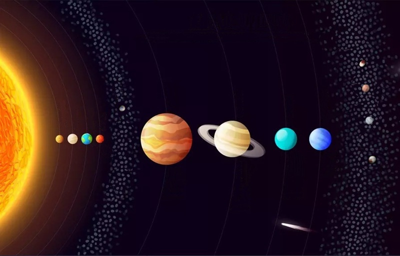

Projet personnel sur le Système solaire
EN GÉNÉRAL
Le système solaire
Les planètes
Les planètes naines
Les satellites
Astres hypothétiques
La formation du système
Où sommes-nous ?
Dans le détail
Le soleil
Mercure
Vénus
La Terre
Mars
La Ceinture d'astéroïdes
Cérès
Jupiter
Saturne
Uranus
Neptune
La Ceinture de Kuiper
Pluton
Éris
Makémaké
Hauméa
Planète X
L'héliosphère
Les comètes
Le nuage d'Oort
Notre proche voisine
La Voie lactée
AUTRE
Les phénomènes
Les sondes spatiales
